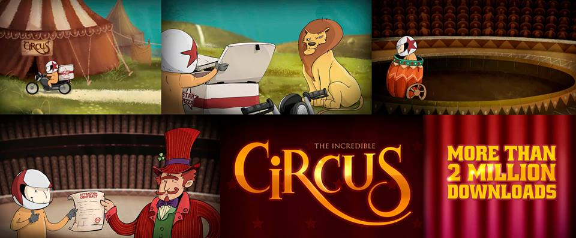

Mailson Menezes
openBossa @ INdT
Mailson Menezes
Desenvolvimento da versão HTML5 do Incredible Circus.
Jogue no Facebook
Também disponível para iOS, Android e Windows Phone
Menor controle sobre a plataforma
Estávamos acostumados a trabalhar em um ambiente nativo
Preocupação com a performance do jogo
Experiência do time
Elemento HTML de pintura
Suporte 2D (canvas2d) e 3D (WebGL)
Acesso via JavaScript
As imagens não serão imediatamente exibidas, serão desenhadas
Útil para o uso de spritesheets
Cada elemento do jogo tem uma representação nas 3 camadas principais (core, physics e UI)
Chamar o update do jogo em um intervalo fixo de tempo
setInterval
Não temos muito controle sobre o loop do jogo
setTimeout
requestAnimationFrame
O navegador que dá o tick do jogo
A frequencia é menor quando a janela está inativa
Útil para manter a sanidade
Tratar como se você fosse trocar de biblioteca no futuro
Às vezes você descobre no meio do projeto que a biblioteca não é suficiente
Decidimos não usar jQuery
Não muito usado em games, mas bastante útil
Melhora o reuso dos componentes
Mais fácil de identificar os tipos
Browsers evoluem rapidamente